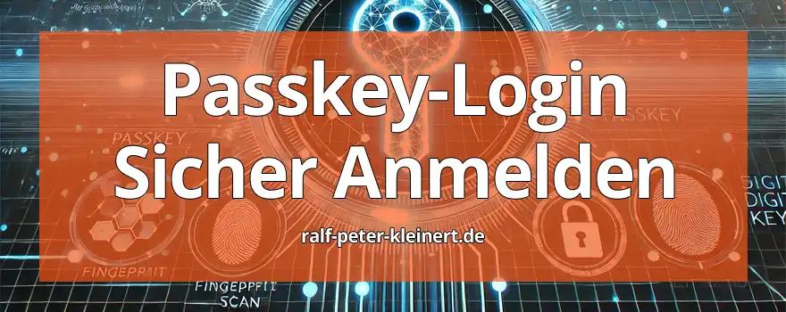

Liebe Leserinnen und Leser,
ich freue mich, Ihnen heute eine neue und zukunftsweisende Möglichkeit vorstellen zu dürfen, wie Sie sich sicherer und einfacher bei Online-Diensten anmelden können: Passkeys. Diese Technologie verspricht, die klassische Passwort-Anmeldung in naher Zukunft abzulösen und bietet zahlreiche Vorteile in Sachen Sicherheit und Benutzerfreundlichkeit.
In diesem Artikel habe ich mir die Zeit genommen, Ihnen Passkeys im Detail zu erklären. Obwohl das Thema auf den ersten Blick komplex wirken mag, werde ich es so einfach wie möglich halten. Sie finden hier eine klare Struktur und können über das Artikelnavigationsmenü bequem zu den verschiedenen Abschnitten springen. So können Sie gezielt die Themen ansteuern, die Sie besonders interessieren, und sich Schritt für Schritt in das Thema einlesen.
Meine Absicht ist es, Ihnen alles rund um Passkeys verständlich und umfassend zu vermitteln. Ich erkläre Ihnen, wie Passkeys funktionieren, welche technischen Voraussetzungen erforderlich sind und wie Sie diese Technologie auf verschiedenen Geräten, wie Windows, Linux, Android und iPhone, nutzen können. Ob Sie ein technisches Grundverständnis haben oder komplett neu in diesem Bereich sind, ich versuche, all Ihre Fragen so verständlich und vollständig wie möglich zu beantworten.
Ich habe den Artikel so gestaltet, dass er Ihnen sowohl einen umfassenden Überblick als auch praktische Anleitungen bietet. So können Sie sicherstellen, dass Sie von den neuesten Sicherheitsfunktionen profitieren, ohne sich mit komplizierten Passwörtern herumschlagen zu müssen.
Ich hoffe, Ihnen mit diesem Artikel ein tiefes Verständnis für Passkeys zu vermitteln und Ihnen die Vorteile dieser modernen Anmeldemethode näherzubringen.
Inhalte des Artikels: Passkeys
Passkeys sind eine einfache und sichere Methode, um sich bei Online-Diensten anzumelden, ohne ein Passwort eingeben zu müssen. Statt eines Passworts verwenden Sie etwas, das Sie bereits besitzen, wie zum Beispiel Ihr Smartphone oder Ihren Computer, um sich zu identifizieren.
Nehmen wir das Beispiel von Bob, der sich bei seiner Bank anmelden möchte. Früher musste er sich ein kompliziertes Passwort merken und eingeben. Mit Passkeys ist das nicht mehr nötig. Stattdessen erhält er beim Anmeldeversuch eine Benachrichtigung auf seinem Handy. Dort bestätigt er seine Identität, zum Beispiel durch Fingerabdruck oder Gesichtserkennung. Damit ist er sicher eingeloggt, ohne ein Passwort eintippen zu müssen.
Wie können Sie das nutzen?
Passkeys bieten mehr Sicherheit, da sie nicht wie herkömmliche Passwörter gestohlen oder gehackt werden können. Sie funktionieren nur in Verbindung mit Ihrem persönlichen Gerät, und die Bestätigung erfolgt direkt dort. Das macht es für Hacker sehr schwierig, auf Ihre Konten zuzugreifen.
Empfohlener Artikel: KeePass für Privatpersonen
Speichern sie ihre Passwörter sicher, kostenlos und erhöhen sie damit ihre Sicherheit enorm.
Sicherer Passwort-Tresor und Passwort-Safe, KeePass Anleitung
Kostenlose IT-Sicherheits-Bücher & Information via Newsletter
Bleiben Sie informiert, wann es meine Bücher kostenlos in einer Aktion gibt: Mit meinem Newsletter erfahren Sie viermal im Jahr von Aktionen auf Amazon und anderen Plattformen, bei denen meine IT-Sicherheits-Bücher gratis erhältlich sind. Sie verpassen keine Gelegenheit und erhalten zusätzlich hilfreiche Tipps zur IT-Sicherheit. Der Newsletter ist kostenlos und unverbindlich – einfach abonnieren und profitieren!
Wenn Sie Ihr Handy verlieren oder es kaputtgeht, sind Passkeys dennoch sicher, und es gibt Wege, wieder Zugang zu Ihren Konten zu bekommen. Genau wegen dieser wichtigen Frage möchte ich Ihnen alles zeigen und erklären – damit Sie sicher sein können, dass Ihr Passkey nicht verloren gehen kann. Es gibt mehrere Möglichkeiten, den Zugang zu Ihren Konten auch dann zu sichern, wenn Ihr Hauptgerät verloren geht oder beschädigt wird. Passkeys sind so konzipiert, dass sie geräteübergreifend funktionieren und durch Cloud-Synchronisierung sicher gespeichert werden.
Ich werde da bei jeder Anleitung zu Google, Microsoft, Linux und Apple immer dazuschreiben, liste es aber hier schon mal auf.
Wenn Ihr Handy verloren geht oder kaputtgeht, ist der Zugang zu Ihren Konten nicht verloren. Mit Backup-Optionen und alternativen Anmeldemethoden können Sie problemlos wieder auf Ihre Konten zugreifen. Ich werde ihnen zeigen, wie sie diese Funktionen verwenden, um ihre Passkeys zu schützen.
Passkeys sind eine moderne und sichere Methode, sich bei Online-Diensten anzumelden, ohne sich ein Passwort merken zu müssen. Stattdessen verwenden Sie etwas, das Sie schon haben – wie Ihr Handy oder Computer – um Ihre Identität zu bestätigen. Es ist, als ob Sie die Haustür zu Ihrem digitalen Leben mit einem Fingerabdruck oder Gesichtserkennung aufschließen, anstatt mit einem Schlüssel, der gestohlen oder kopiert werden könnte.
Wenn Sie sich bei einem Dienst anmelden, der Passkeys unterstützt, wie zum Beispiel Google oder Microsoft, erhalten Sie eine Anfrage auf Ihrem Handy oder Computer. Dort bestätigen Sie Ihre Identität mit Face ID, Fingerabdruck oder einer PIN. Das war’s. Keine Passwörter, die Sie vergessen könnten, keine komplizierten Zeichenfolgen. Nur Sie und Ihr Gerät. Die Sicherheit wird dadurch verbessert, weil der Passkey direkt an Ihr Gerät gekoppelt ist.
Jetzt wird es technisch
Passkeys basieren auf einer Technologie namens FIDO2 (Fast Identity Online), die öffentliche und private Schlüssel verwendet, um Ihre Identität zu bestätigen. Wenn Sie einen Passkey erstellen, generiert Ihr Gerät ein Schlüsselpaar: einen öffentlichen und einen privaten Schlüssel. Der öffentliche Schlüssel wird an den Dienst (zum Beispiel eine Website) geschickt, der private Schlüssel bleibt sicher auf Ihrem Gerät.
Wenn Sie sich später anmelden, fordert der Dienst Ihr Gerät auf, den privaten Schlüssel zu verwenden, um Ihre Identität zu bestätigen. Das Gerät gibt diesen privaten Schlüssel aber nie preis. Stattdessen wird eine sogenannte Challenge (eine zufällige Aufgabe) geschickt, die nur mit dem privaten Schlüssel beantwortet werden kann. Dadurch wird der Login bestätigt. Selbst wenn jemand den öffentlichen Schlüssel abfangen würde, wäre er wertlos, da der private Schlüssel sicher auf Ihrem Gerät bleibt.
Dieser Vorgang funktioniert über eine sichere Verbindung, sodass auch Hacker, die versuchen, Daten abzufangen, keine Chance haben. Das Ganze läuft nahtlos im Hintergrund ab und sorgt dafür, dass nur Sie auf Ihre Konten zugreifen können – und zwar ohne die üblichen Sicherheitslücken, die Passwörter mit sich bringen.
Passkeys - fast wie SSH-Keys
Man könnte sagen, dass Passkeys in etwa wie SSH-Keys funktionieren, da beide auf Public-Key-Kryptografie basieren. Der grundlegende Mechanismus ist ähnlich: Bei SSH-Keys generieren Sie ein Schlüsselpaar aus einem öffentlichen und einem privaten Schlüssel. Der öffentliche Schlüssel wird auf dem Server gespeichert, während der private Schlüssel sicher auf Ihrem Gerät bleibt. Wenn Sie sich dann verbinden, nutzt der Server den öffentlichen Schlüssel, um eine Challenge zu erstellen, die nur mit dem privaten Schlüssel gelöst werden kann, ohne dass der private Schlüssel selbst übertragen wird.
Admins kennen das sicher gut – SSH-Keys ermöglichen es, sich sicher und passwortlos auf Servern anzumelden. Genau wie bei SSH-Keys bleiben Passkeys auf dem Gerät des Nutzers sicher gespeichert und werden nicht über das Netzwerk versendet. Der Unterschied bei Passkeys liegt vor allem in der Benutzerfreundlichkeit, da sie auf mobilen Geräten und in alltäglichen Online-Diensten genutzt werden können, häufig in Kombination mit biometrischen Authentifizierungen wie Fingerabdruck oder Gesichtserkennung. Das macht Passkeys nicht nur sicher, sondern auch deutlich komfortabler für den Alltag.
Empfohlener Artikel zu Backups
Backups sind einfach zu machen und heben die Sicherheit auf ein neues Level.
Hier ist eine Schritt-für-Schritt-Anleitung, wie Sie Passkeys unter Windows nutzen können. Als Beispiel verwenden wir Google, um Ihnen zu zeigen, wie einfach und sicher die Anmeldung funktioniert.
Schritt 1: Windows Hello einrichten
Bevor Sie Passkeys verwenden können, müssen Sie sicherstellen, dass Windows Hello auf Ihrem Gerät aktiviert ist. Windows Hello ist das Tool, das biometrische Authentifizierungsmethoden wie Fingerabdruck, Gesichtserkennung oder PIN verwendet.
Schritt 2: Anmeldung bei Google vorbereiten
Sobald Windows Hello aktiviert ist, besuchen Sie Google, um die Anmeldung über Passkeys zu konfigurieren.
Schritt 3: Passkey bei Google einrichten
Sobald Sie die Option zur Passkey-Einrichtung gefunden haben, führt Sie Google Schritt für Schritt durch den Einrichtungsprozess.
Schritt 4: Anmeldung mit Passkey
Nachdem der Passkey eingerichtet ist, können Sie sich fortan ohne Passwort bei Google anmelden:
Schritt 5: Was tun, wenn das Gerät verloren geht?
Falls Ihr Windows-Gerät verloren geht oder defekt ist, bleiben Ihre Passkeys sicher im Google-Schlüsselbund gespeichert. Sie können sich auf einem anderen Gerät mit Ihrem Google-Konto anmelden und den Passkey wiederherstellen. Zudem gibt es alternative Anmeldemethoden wie die Anmeldung per E-Mail oder SMS, um auf Ihr Google-Konto zuzugreifen.
Mit Passkeys bietet Google in Kombination mit Windows Hello eine einfache und sichere Möglichkeit, sich ohne Passwort anzumelden. Der Prozess ist unkompliziert und verbessert die Sicherheit erheblich, da Passkeys nicht gestohlen oder gehackt werden können. Durch die Synchronisierung im Google-Schlüsselbund bleiben Ihre Passkeys auf allen Ihren Geräten verfügbar.
Inzwischen ist Google dazu übergegangen, dass Passkeys automatisch erstellt werden, wenn Sie sich mit einem Handy bei Google anmelden. Sobald Sie sich auf einem mobilen Gerät einloggen, wird automatisch ein Passkey generiert, der im Google-Schlüsselbund sicher gespeichert wird. Sie können die erzeugten Passkeys in Ihrem Google-Konto verwalten.
Unter Google-Konto verwalten gehen Sie zu Sicherheit und dort finden Sie den Bereich Passkeys und Sicherheitsschlüssel. Dort werden Ihnen die automatisch erstellten Passkeys angezeigt, und Sie können diese bei Bedarf verwalten oder entfernen. Das vereinfacht die Nutzung von Passkeys, da sie im Hintergrund generiert und sicher gespeichert werden, ohne dass Sie zusätzliche Schritte unternehmen müssen.
Hier ist eine Schritt-für-Schritt-Anleitung, wie Sie Passkeys auf einem Android-Gerät nutzen können, am Beispiel von Google. Aktuelle Informationen, wie die automatische Erstellung von Passkeys bei der Anmeldung, sind dabei berücksichtigt.
Schritt 1: Android-Sicherheit und Google-Konto vorbereiten
Bevor Sie Passkeys auf Ihrem Android-Gerät verwenden können, müssen einige Voraussetzungen erfüllt sein:
Schritt 2: Anmeldung bei Google
Sobald Ihr Gerät bereit ist, können Sie sich bei einem Dienst wie Google anmelden, um Passkeys zu nutzen. Besuchen Sie die Google-Website oder nutzen Sie die Google-App.
Schritt 3: Verwaltung der Passkeys
Google bietet Ihnen die Möglichkeit, Ihre Passkeys zu verwalten. Hier können Sie überprüfen, welche Passkeys automatisch erstellt wurden.
Schritt 4: Nutzung der Passkeys zur Anmeldung
Nachdem ein Passkey automatisch erstellt wurde, können Sie ihn für zukünftige Anmeldungen bei Google verwenden.
Schritt 5: Was tun, wenn das Gerät verloren geht?
Sollten Sie Ihr Android-Gerät verlieren, bleiben Ihre Passkeys sicher im Google-Schlüsselbund gespeichert. Sie können sich auf einem anderen Gerät mit Ihrem Google-Konto anmelden und Ihre Passkeys werden synchronisiert. Google bietet zudem alternative Methoden wie E-Mail- oder SMS-Wiederherstellung, um auf Ihre Konten zugreifen zu können.
Passkeys auf Android bieten eine sichere und komfortable Möglichkeit, sich ohne Passwörter anzumelden. Durch die automatische Erstellung und Speicherung von Passkeys im Google-Schlüsselbund wird der Prozess weiter vereinfacht und gleichzeitig die Sicherheit gewährleistet.
Hier ist eine Schritt-für-Schritt-Anleitung, wie Sie Passkeys auf einem iPhone nutzen können, am Beispiel von Google. Diese Anleitung berücksichtigt die neuesten Funktionen wie die automatische Erstellung von Passkeys durch Google.
Schritt 1: iPhone vorbereiten
Bevor Sie Passkeys auf Ihrem iPhone nutzen können, sollten Sie sicherstellen, dass Ihr Gerät auf dem neuesten Stand ist und die grundlegenden Sicherheitsfunktionen aktiviert sind:
Schritt 2: Anmeldung bei Google
Google hat die Passkey-Funktion so optimiert, dass bei der Anmeldung mit einem mobilen Gerät automatisch ein Passkey erstellt wird. Dies bedeutet, dass Sie keinen zusätzlichen Schritt zur Erstellung eines Passkeys unternehmen müssen.
Schritt 3: Verwaltung der Passkeys
Falls Sie die automatisch erstellten Passkeys einsehen oder verwalten möchten, können Sie dies direkt in Ihrem Google-Konto tun.
Schritt 4: Anmeldung mit Passkey
Nach der einmaligen Einrichtung können Sie sich zukünftig problemlos bei Google mit dem erstellten Passkey anmelden.
Schritt 5: Was tun, wenn das iPhone verloren geht?
Falls Ihr iPhone verloren geht, bleiben Ihre Passkeys sicher im iCloud-Schlüsselbund gespeichert. Sie können sich mit einem anderen Apple-Gerät oder einem neuen iPhone mit Ihrer Apple-ID anmelden, und Ihre Passkeys werden automatisch wiederhergestellt. Zusätzlich bietet Google alternative Methoden zur Wiederherstellung des Kontozugangs, wie die Anmeldung per E-Mail oder SMS.
Die Nutzung von Passkeys auf dem iPhone in Verbindung mit Google macht das Anmelden einfacher und sicherer. Die automatische Erstellung und Synchronisierung über den iCloud-Schlüsselbund sorgt dafür, dass Ihre Passkeys immer verfügbar und sicher aufbewahrt werden, selbst wenn Ihr Gerät verloren geht. Mit biometrischer Authentifizierung wie Face ID oder Touch ID wird der Anmeldeprozess zusätzlich komfortabler.
Ich bin mir bewusst, dass auch ich nur ein Mensch bin, der nur so vor Fehlern strotzt – wie jeder andere auch. Es kann gut sein, dass ich mich vielleicht an manchen Stellen nicht verständlich genug ausgedrückt habe, vielleicht sogar etwas Falsches geschrieben habe. Wenn das der Fall ist, tut es mir leid, und ich hoffe, dass mich jemand darauf hinweist. Diese technischen Themen unterliegen zudem ständigen Veränderungen, weshalb es besonders wichtig ist, immer auf dem neuesten Stand zu bleiben.
Deshalb habe ich hier eine Liste von Webseiten zusammengestellt, die sich ebenfalls intensiv mit dem Thema Passkeys beschäftigen und bei denen Sie weitere Informationen finden können:
https://www.dashlane.com/de/passkeys
Dashlane bietet eine umfassende Erklärung darüber, was Passkeys sind und wie sie funktionieren. Sie gehen darauf ein, wie Passkeys im Gegensatz zu herkömmlichen Passwörtern funktionieren und warum sie sicherer sind. Das Konzept von öffentlichen und privaten Schlüsseln wird hier anschaulich erklärt, und es wird gezeigt, wie Dashlane Passkeys speichert und synchronisiert, um sie auf mehreren Geräten zu verwenden. Besonders hilfreich ist der praktische Ansatz für Nutzer, die bereits Passwort-Manager nutzen und auf Passkeys umsteigen wollen.
https://blog.google/intl/de-de/unternehmen/technologie/passkeys-101/
Google erklärt in einem ausführlichen Artikel, wie Passkeys funktionieren und warum sie Passwörter in Zukunft ersetzen sollen. Der Artikel gibt einen Einblick in die Funktionsweise von Passkeys mit öffentlichen und privaten Schlüsseln und stellt dar, wie Google die Implementierung auf verschiedenen Plattformen wie Android und Chrome vorantreibt. Besonders nützlich sind die Informationen zu Googles Vision einer "passwortlosen Zukunft".
https://zapier.com/blog/what-is-a-passkey/ (Englisch)
Zapier bietet eine sehr verständliche und detaillierte Erklärung zu Passkeys. Sie gehen auf die technischen Aspekte ein, wie die Schlüsselpaare (öffentlich und privat) funktionieren, und bieten auch einen Überblick darüber, welche Apps und Geräte Passkeys bereits unterstützen. Dieser Artikel ist nützlich, wenn Sie sich ein Bild davon machen möchten, wie Passkeys auf verschiedenen Plattformen (wie Apple, Google und Microsoft) funktionieren und welche Herausforderungen noch bestehen.
Dieser Artikel auf PCWorld erklärt, wie Passkeys funktionieren, indem er die Vorteile gegenüber Passwörtern herausstellt. Es wird betont, wie Passkeys sicherer und nutzerfreundlicher sind, da sie Phishing-Angriffe verhindern und die Anmeldung durch biometrische Merkmale wie Fingerabdruck oder Gesichtserkennung erleichtern.
https://www.passkeys.io (Englisch)
Passkeys.io bietet eine praktische Demo-Seite, auf der Sie selbst ausprobieren können, wie Passkeys in der Praxis funktionieren. Diese Seite richtet sich an Nutzer, die tiefer in die Funktionsweise eintauchen und sehen möchten, wie Passkeys auf verschiedenen Geräten genutzt werden können. Es ist eine großartige Ressource für alle, die Passkeys aktiv testen wollen.
https://www.pcwelt.de/article/2107907/einloggen-ohne-passworter-passkeys.html
Unsere guten alten 3 Deutschen Computerzeitschriften dürfen in dieser Liste natürlich nicht fehlen. Also mehr Informationen über Passkeys wird kaum jemand benötigen.
Das BSI darf natürlich nicht vergessen werden:
Passkeys, wie wir sie heute kennen, sind das Ergebnis jahrelanger Entwicklung im Bereich der Authentifizierungstechnologien. Die Idee dahinter ist jedoch nicht ganz neu. Das Konzept basiert auf der FIDO2-Technologie (Fast Identity Online), die von der FIDO Alliance entwickelt wurde. Diese Allianz besteht aus einer Vielzahl namhafter Technologieunternehmen wie Google, Microsoft, und Apple. Doch wer genau hat diese Technologie vorangetrieben und den Weg für Passkeys geebnet?
Die FIDO Alliance: Der Ursprung
Die FIDO Alliance wurde 2012 gegründet und ist ein Zusammenschluss von Technologieunternehmen, die ein gemeinsames Ziel verfolgen: den Abschied von unsicheren Passwörtern und den Weg hin zu einer sichereren, passwortlosen Zukunft. Die Organisation hat den Standard für eine sogenannte Public-Key-Authentifizierung entwickelt. Hierbei wird ein Schlüsselpaar generiert, bestehend aus einem öffentlichen und einem privaten Schlüssel, um den Anmeldeprozess sicher und nutzerfreundlich zu gestalten.
Zu den Gründungsmitgliedern der FIDO Alliance gehören unter anderem PayPal und Lenovo, die erkannt haben, dass herkömmliche Passwörter nicht nur umständlich sind, sondern auch erhebliche Sicherheitslücken mit sich bringen. PayPal war beispielsweise einer der ersten großen Anbieter, die bereits 2014 den FIDO UAF-Standard für passwortlose Authentifizierung in ihren Diensten implementierten.
WebAuthn und FIDO2: Die Weiterentwicklung
Ein wesentlicher Meilenstein auf dem Weg zur Einführung von Passkeys war die Entwicklung des WebAuthn-Standards (Web Authentication), der 2016 von der World Wide Web Consortium (W3C) in Zusammenarbeit mit der FIDO Alliance veröffentlicht wurde. WebAuthn ermöglicht es, Websites passwortlose Anmeldeverfahren zu nutzen, die auf öffentlichen und privaten Schlüsseln basieren. Dieser Standard wurde schnell von großen Webbrowsern wie Chrome, Firefox und Edge übernommen und war die Grundlage für die nächste große Entwicklung: FIDO2.
Mit FIDO2 wurde der Grundstein für Passkeys gelegt. Dieser Standard kombiniert WebAuthn mit CTAP (Client to Authenticator Protocol), was bedeutet, dass Passkeys auf einer Vielzahl von Geräten und Plattformen genutzt werden können, sei es über biometrische Daten wie Fingerabdruck oder Gesichtserkennung oder über Hardware-Sicherheitsschlüssel.
Apple, Google und Microsoft: Die Vorantreiber
Die breitere Akzeptanz von Passkeys wurde maßgeblich von den drei großen Technologieunternehmen Apple, Google und Microsoft vorangetrieben. Diese Unternehmen erkannten das Potenzial von FIDO2 und implementierten den Standard in ihren Betriebssystemen und Diensten.
Apple führte Passkeys erstmals mit iOS 16 und macOS Ventura ein und nutzt dabei den iCloud-Schlüsselbund, um Passkeys über alle Geräte eines Benutzers hinweg zu synchronisieren. Dadurch wird es den Nutzern ermöglicht, Passkeys nahtlos zwischen iPhone, iPad und Mac zu verwenden.
Google hat ebenfalls Passkeys in seinen Diensten und Android-Betriebssystemen integriert. Passkeys werden im Google-Schlüsselbund gespeichert, sodass sie auf verschiedenen Android-Geräten genutzt werden können.
Microsoft hat Windows Hello weiterentwickelt, um Passkeys in Verbindung mit FIDO2 zu unterstützen. Windows-Nutzer können sich über biometrische Authentifizierung oder Sicherheitsschlüssel passwortlos anmelden.
Eine kollektive Anstrengung
Wer hat also die Passkeys erfunden? Es ist das Ergebnis einer kollektiven Anstrengung von vielen der größten Technologieunternehmen der Welt, zusammen mit der FIDO Alliance. Obwohl es keinen einzelnen Erfinder gibt, ist die Entwicklung von Passkeys ein perfektes Beispiel dafür, wie die Zusammenarbeit in der Technologiebranche zu innovativen Lösungen führen kann, die letztlich die Sicherheit und Benutzerfreundlichkeit für alle verbessern.
Der Weg von unsicheren Passwörtern hin zu sicheren Passkeys zeigt, wie wichtig es ist, neue Standards zu entwickeln, die sowohl den Nutzern als auch den Unternehmen eine sicherere und bequemere Zukunft bieten.
Ich selbst nutze Google seit der Laden aufgemacht hat – ohne Google wäre ich im Bereich IT nicht dort, wo ich jetzt bin. Ich persönlich habe Google alles zu verdanken, was ich heute weiß – und das geht vielen, fast allen so. Google ist so normal geworden, dass man es fast als Freund bezeichnen kann. Ja, es gibt auch Schattenseiten, aber wer hat die nicht? Fakt ist, dass Google die Welt wie kein anderes Unternehmen geformt hat. Deshalb empfehle ich aus persönlichen Gründen Google für die Aufbewahrung von Passkeys zu nutzen.
Google hat offiziell damit begonnen, Passkeys im Rahmen seiner Sicherheitsinitiativen zu unterstützen, nachdem der Standard der FIDO2 Alliance und der WebAuthn-Standard entwickelt wurde. Die Integration von Passkeys in Googles Dienste nahm mit der Einführung von Android 9 und dem Google Password Manager Fahrt auf. Dies war Teil einer umfassenden Bemühung, Passwörter durch sicherere Anmeldeoptionen zu ersetzen, die sowohl den Komfort als auch die Sicherheit für den Nutzer erhöhen.
Im Jahr 2022 hat Google, zusammen mit anderen Tech-Giganten wie Apple und Microsoft, die Passkey-Technologie offiziell eingeführt. Der Fokus lag darauf, eine nahtlose und plattformübergreifende Lösung zu schaffen, die sowohl auf Computern als auch auf mobilen Geräten funktioniert. Google hat damit die Basis für eine passwortlose Zukunft gelegt.
Google spielt eine führende Rolle in der Entwicklung und Verbreitung von Passkeys. Das Unternehmen war maßgeblich daran beteiligt, die FIDO-Standards zu unterstützen und diese in seine eigene Infrastruktur zu integrieren. Google bietet Passkey-Unterstützung für eine Vielzahl von Geräten und Plattformen, insbesondere durch den Google Password Manager, der Passkeys sicher speichert und synchronisiert. Google sorgt dafür, dass Benutzer ihre Passkeys geräteübergreifend verwenden können, indem sie diese sicher im Google-Konto speichern. Dies bietet Nutzern die Möglichkeit, sich bei Diensten anzumelden, ohne sich Passwörter merken zu müssen, und das auf allen Geräten, die mit ihrem Google-Konto verknüpft sind.
Darüber hinaus hat Google Passkeys tief in das Android-Ökosystem integriert. Nutzer von Android-Geräten können biometrische Daten wie Fingerabdruck oder Gesichtserkennung verwenden, um sich mit Passkeys bei Online-Diensten anzumelden, was den gesamten Anmeldeprozess sicherer und bequemer macht.
Die Frage nach der Vertrauenswürdigkeit von Google im Zusammenhang mit der Speicherung von Passkeys ist durchaus berechtigt. Google hat eine langjährige Erfolgsgeschichte in der Entwicklung von Sicherheitsstandards und der Absicherung von Benutzerkonten. Mit Produkten wie dem Google Password Manager und dem Google-Konto bietet das Unternehmen eine ausgereifte und gut geschützte Umgebung für die Speicherung sensibler Daten.
Der Vorteil der Nutzung von Google zur Passkey-Verwaltung liegt in der robusten Infrastruktur und den umfassenden Sicherheitsmaßnahmen, die das Unternehmen implementiert. Google verwendet Ende-zu-Ende-Verschlüsselung, um sicherzustellen, dass Passkeys sicher gespeichert werden und nur der Nutzer darauf zugreifen kann. Selbst wenn die Server von Google angegriffen würden, wären die Passkeys aufgrund der Verschlüsselung geschützt.
Natürlich gibt es immer wieder Diskussionen über Datenschutz und die immense Datenmacht von Google. Dennoch muss man festhalten, dass Google im Bereich der Sicherheitsstandards weltweit führend ist. Die Tatsache, dass Google an der Spitze der Entwicklung der FIDO2-Technologie steht, zeigt, dass das Unternehmen bestrebt ist, die besten Lösungen für Online-Sicherheit zu liefern.
Ein weiterer wichtiger Punkt, warum ich Google für die Speicherung von Passkeys empfehle, ist die sichere Speicherung im Google-Konto. Passkeys werden mit einer sicheren Verschlüsselung im Google-Schlüsselbund gespeichert und sind mit der Zwei-Faktor-Authentifizierung von Google gekoppelt, was den Schutz nochmals verstärkt. Das bedeutet, dass Ihre Passkeys nicht nur auf einem Gerät verfügbar sind, sondern auf jedem Gerät, das mit Ihrem Google-Konto verknüpft ist.
Sollte ein Gerät verloren gehen, können Sie auf Ihre Passkeys immer noch zugreifen, indem Sie sich einfach auf einem anderen Gerät mit Ihrem Google-Konto anmelden. Dies bietet eine enorme Flexibilität und Sicherheit für den Fall, dass Sie einmal nicht auf Ihr Hauptgerät zugreifen können.
Zusammenfassend lässt sich sagen, dass Google eine zentrale Rolle bei der Einführung und Verbreitung von Passkeys spielt. Die Integration in das Google-Ökosystem, die Möglichkeit zur sicheren Speicherung und Synchronisation sowie die führende Rolle bei der Entwicklung der FIDO-Standards machen Google zu einem vertrauenswürdigen Partner in Sachen Online-Sicherheit. Die Passkey-Technologie ist der nächste Schritt in der Evolution der Authentifizierung, und Google ist bestens aufgestellt, um diesen Wandel zu unterstützen.
Für mich persönlich ist Google der ideale Ort, um Passkeys sicher zu verwalten. Die Kombination aus Sicherheit, Benutzerfreundlichkeit und der tiefen Integration in das Android- und Google-Ökosystem machen es zur besten Wahl. Wenn Sie auf der Suche nach einer zukunftssicheren und sicheren Möglichkeit sind, Ihre Online-Konten zu verwalten, dann ist Google definitiv der richtige Partner.
Der Austausch von Passkeys zwischen verschiedenen Geräten und Systemen nimmt langsam Gestalt an. Die FIDO Alliance hat nun einen ersten Entwurf für neue Spezifikationen veröffentlicht, die genau dies ermöglichen sollen. Diese Standards tragen die Namen Credential Exchange Protocol (CXP) und Credential Exchange Format (CXF). Beide sind derzeit noch in der Entwicklung und warten auf das Feedback der Community. Wenn Sie möchten, können Sie sich also einbringen – und dabei gleich einen Blick in das GitHub-Repository der FIDO Alliance werfen.
Doch warum das Ganze? Ganz einfach: Es geht darum, den Benutzerkomfort und die Sicherheit im Umgang mit Passkeys deutlich zu verbessern. Konkret bedeutet das, dass Sie als Nutzer nicht ständig zwischen verschiedenen Anbietern und Geräten hin- und herwechseln müssen, um Ihre Anmeldeinformationen zu nutzen. Stellen Sie sich vor, Sie wechseln von Ihrem Handy zu Ihrem Tablet oder vielleicht sogar zu einem neuen Browser – der Übergang soll nahtlos erfolgen, ohne dass Sie jedes Mal von vorne beginnen müssen.
Aber wie so oft: Ein solches Ziel erfordert solide Arbeit, und ein Protokoll ist kein Schnellschuss. Es braucht Zeit, bis alle Sicherheitsfragen geklärt sind und die Implementierung reibungslos funktioniert. Die FIDO Alliance macht hier keine halben Sachen, und das ist auch gut so. Schließlich geht es hier um Ihre persönlichen Daten.
Wann genau wir den finalen Standard in den Händen halten, bleibt abzuwarten. Die FIDO Alliance plant zunächst weitere Tests und Anpassungen, um sicherzustellen, dass der Standard in der Praxis wirklich sicher und funktional ist. Bis dahin ist Geduld gefragt – und wer möchte, kann diesen Prozess live verfolgen und vielleicht sogar mitgestalten.
Hier beantworte ich Ihnen die meiner Meinung nach wichtigsten Fragen zu Passkeys, um Ihnen ein besseres Verständnis für diese innovative Technologie zu geben, die Passwörter in Zukunft ablösen könnte. Passkeys bieten eine sicherere und benutzerfreundlichere Methode zur Authentifizierung, da sie auf kryptografischen Schlüsselpaaren basieren und Phishing sowie Passwortdiebstahl verhindern.
Ich erkläre, wie Passkeys funktionieren, auf welchen Geräten sie verwendet werden können, und was zu tun ist, wenn Sie den Zugriff auf Passkeys oder die zugehörigen Geräte verlieren. Zudem gehe ich auf häufige Sicherheitsfragen ein, wie Sie Passkeys löschen, synchronisieren oder auch in Kombination mit Zwei-Faktor-Authentifizierung (2FA) nutzen können. Dieser Überblick soll Ihnen helfen, Passkeys besser zu verstehen und sicherer in der digitalen Welt zu navigieren.
Ein Passkey ist eine moderne Methode zur Authentifizierung, die Passwörter durch eine sicherere und benutzerfreundlichere Technik ersetzt. Während ein Passwort eine Zeichenfolge ist, die man manuell eingeben muss und die oft anfällig für Phishing und Hacking ist, nutzt ein Passkey Kryptografie und biometrische Daten, um Sie automatisch anzumelden.
Der Hauptunterschied besteht darin, dass Passkeys keine Kombinationen von Buchstaben und Zahlen sind, die Sie sich merken oder irgendwo speichern müssen. Stattdessen basieren sie auf zwei Teilen: einem öffentlichen Schlüssel, der bei dem Dienst (wie einer Website) gespeichert wird, und einem privaten Schlüssel, der sicher auf Ihrem Gerät gespeichert ist. Dieser private Schlüssel wird nur über eine biometrische Methode wie Fingerabdruck, Gesichtserkennung oder einen Sicherheitsschlüssel freigegeben.
Wenn Sie sich bei einem Dienst anmelden, sendet Ihr Gerät den öffentlichen Schlüssel, und der private Schlüssel wird verwendet, um zu beweisen, dass Sie der rechtmäßige Benutzer sind. Sie müssen also nichts mehr eingeben oder sich merken. Das bedeutet auch, dass Passkeys nicht abgefangen oder gestohlen werden können, wie es bei Passwörtern der Fall ist. Außerdem sind Passkeys von Natur aus gegen Phishing geschützt, da sie nur mit der richtigen Website interagieren können, für die sie erstellt wurden.
Der Clou an der Sache: Passkeys bieten eine zusätzliche Sicherheitsebene, weil sie nicht nur auf dem Gerät, sondern auch oft in einer verschlüsselten Cloud gespeichert werden, sodass Sie sie auf mehreren Geräten verwenden können, ohne an Sicherheit zu verlieren.
Um einen Passkey zu erstellen, braucht es ein Gerät, das Passkeys unterstützt – sei es ein Smartphone oder ein Computer. Der Prozess ist relativ einfach, aber er variiert je nach Betriebssystem und Dienst. Im Folgenden gehe ich auf die wesentlichen Schritte ein, um einen Passkey auf einem Gerät mit Windows oder Android zu erstellen, die oft genutzt werden.
Passkey auf Windows erstellen
Unterstützte App oder Website besuchen: Die meisten großen Websites und Dienste wie Google, Microsoft oder Facebook bieten mittlerweile die Möglichkeit, Passkeys zu nutzen. Stellen Sie sicher, dass Sie eine solche Seite aufrufen, die Passkeys unterstützt.
Anmeldung starten: Melden Sie sich wie gewohnt an oder erstellen Sie ein neues Konto. Bei der Einrichtung des Kontos wird Ihnen möglicherweise die Option „Passkey verwenden“ oder „Passwortlos anmelden“ angeboten.
Windows Hello verwenden: Auf einem Windows-Rechner, der Windows Hello unterstützt (das heißt, Geräte mit biometrischer Erkennung wie Gesicht oder Fingerabdruck), wird automatisch angeboten, Passkeys mit Windows Hello zu verknüpfen. Sobald Sie das Konto bestätigen, wird Windows Hello verwendet, um den Passkey zu erstellen und zu sichern.
Authentifizierung bestätigen: Sie bestätigen Ihre Identität, indem Sie Ihren Fingerabdruck oder die Gesichtserkennung verwenden, oder – falls das Gerät dies nicht unterstützt – durch eine PIN, die in Windows Hello hinterlegt ist.
Sobald dies abgeschlossen ist, wird der Passkey auf Ihrem Gerät erstellt und im Microsoft-Konto oder der jeweiligen Anwendung gespeichert. Zukünftig können Sie sich automatisch anmelden, indem Sie Windows Hello verwenden, ohne ein Passwort eingeben zu müssen.
Passkey auf Android erstellen
Dienste besuchen, die Passkeys unterstützen: Viele Dienste wie Google oder Samsung haben Passkeys in ihre Systeme integriert. Sie können auf die Website oder die App gehen, um ein neues Konto zu erstellen oder ein bestehendes zu aktualisieren.
Option „Passkey erstellen“ wählen: Wenn die Website Passkeys unterstützt, sollten Sie die Möglichkeit haben, einen Passkey zu erstellen. Das wird oft als Option für eine passwortlose Anmeldung angezeigt.
Biometrische Daten verwenden: Android verwendet in den meisten Fällen Ihre biometrischen Daten, also Fingerabdruck oder Gesichtserkennung, um den Passkey zu erstellen und zu sichern. Alternativ können Sie eine PIN oder ein Passwort verwenden, das bereits mit Ihrem Android-Smartphone verknüpft ist.
Synchronisierung über Google-Konto: Ihr Passkey wird sicher im Google-Konto gespeichert, sodass Sie ihn auf anderen Geräten verwenden können, die mit demselben Konto verbunden sind.
Das Erstellen eines Passkeys ist relativ simpel: Sie müssen nur einen Dienst besuchen, der Passkeys unterstützt, und Ihr Gerät führt Sie Schritt für Schritt durch den Prozess, wobei in der Regel biometrische Daten verwendet werden, um Ihre Identität zu bestätigen und den Passkey zu erstellen.
Passkeys werden von immer mehr Plattformen und Geräten unterstützt, da sie als sicherere Alternative zu herkömmlichen Passwörtern gelten. Viele der großen Tech-Unternehmen haben bereits Passkey-Unterstützung in ihre Betriebssysteme, Geräte und Dienste integriert. Schauen wir uns die wichtigsten Plattformen an:
Apple-Geräte und -Plattformen
Apple war einer der Vorreiter bei der Einführung von Passkeys. Seit iOS 16 und macOS Ventura unterstützt das gesamte Apple-Ökosystem Passkeys. Wenn Sie ein iPhone, iPad oder Mac verwenden, können Sie Passkeys mit iCloud synchronisieren. Dies bedeutet, dass Ihre Passkeys über Ihre Geräte hinweg automatisch verfügbar sind. Der Anmeldeprozess nutzt entweder Face ID, Touch ID oder eine PIN, um den Passkey zu authentifizieren.
Google und Android
Google hat die Unterstützung für Passkeys in Android 9 und neueren Versionen integriert. Google-Konten und Dienste wie Google Chrome und Google Password Manager unterstützen Passkeys, die auf Android-Geräten erstellt werden. Diese Passkeys werden automatisch mit dem Google-Konto synchronisiert, was es einfach macht, sich auf anderen Geräten anzumelden. Viele Websites und Apps auf Android nutzen bereits diese passwortlose Anmeldefunktion.
Windows und Microsoft
Windows unterstützt Passkeys durch Windows Hello. Geräte, die Windows 10 oder 11 nutzen und Windows Hello für die Authentifizierung unterstützen, sind in der Lage, Passkeys zu erstellen und zu verwenden. Passkeys werden mit Ihrem Microsoft-Konto synchronisiert, was eine nahtlose Nutzung auf allen Windows-Geräten ermöglicht. Auch der Microsoft Edge-Browser und Dienste wie Outlook und OneDrive bieten mittlerweile Passkey-Support an.
Browser
Die meisten gängigen Webbrowser wie Google Chrome, Microsoft Edge, Safari und Firefox unterstützen Passkeys. Dies bedeutet, dass Sie Passkeys auf Webseiten, die diese Technologie unterstützen, verwenden können, unabhängig davon, auf welchem Gerät Sie den Browser nutzen. Die Browser greifen auf die Passkeys zu, die auf dem Gerät gespeichert oder über Cloud-Dienste synchronisiert sind.
Passwort-Manager
Einige Passwort-Manager wie 1Password, Dashlane und Bitwarden haben begonnen, Passkeys in ihre Dienste zu integrieren. Dies erlaubt Ihnen, Passkeys sicher zu verwalten und auf verschiedenen Geräten zu nutzen. Auch hier ist die Synchronisation ein wichtiger Vorteil, da sie Passkeys auf verschiedenen Plattformen zugänglich macht.
Plattformübergreifende Dienste
Neben den großen Betriebssystemen und Browsern bieten auch plattformübergreifende Dienste wie PayPal, Amazon, Facebook und WhatsApp Passkey-Unterstützung an. Das bedeutet, dass Sie sich bei diesen Diensten ohne Passwort anmelden können, solange Ihre Geräte Passkeys unterstützen.
Zusammenfassung: Passkeys werden von den meisten modernen Geräten und Plattformen unterstützt, einschließlich Apple, Google, Microsoft und gängigen Webbrowsern. Die Synchronisation über Cloud-Dienste macht es einfach, Passkeys auf verschiedenen Geräten zu verwenden. Sie müssen sich keine Sorgen mehr um Passwörter machen – egal, ob Sie ein Smartphone, einen Computer oder einen Webbrowser nutzen, Passkeys sorgen für Sicherheit und Komfort.
Ja, Sie können Passkeys auf mehreren Geräten gleichzeitig verwenden, aber wie das funktioniert, hängt von der Plattform ab, auf der Sie die Passkeys erstellen und speichern. Der wesentliche Vorteil von Passkeys ist, dass sie oft mit einem Cloud-Konto synchronisiert werden, was es Ihnen ermöglicht, sie nahtlos auf verschiedenen Geräten zu verwenden. Schauen wir uns genauer an, wie das auf verschiedenen Plattformen funktioniert:
Apple-Geräte (iPhone, iPad, Mac)
Apple synchronisiert Passkeys über iCloud. Das bedeutet, wenn Sie einen Passkey auf Ihrem iPhone erstellen, wird dieser sicher in iCloud gespeichert und steht automatisch auf Ihrem Mac oder iPad zur Verfügung, sofern Sie mit dem gleichen Apple-ID-Konto angemeldet sind. Dank der End-to-End-Verschlüsselung in iCloud sind diese Passkeys auch sicher. Wenn Sie also von Ihrem iPhone auf den Mac wechseln, können Sie sich ganz einfach mit dem gespeicherten Passkey anmelden, ohne einen neuen erstellen zu müssen.
Google und Android-Geräte
Auf Android werden Passkeys mit dem Google-Konto synchronisiert. Wenn Sie einen Passkey auf einem Android-Gerät erstellen, wird dieser automatisch in Ihrem Google-Konto gespeichert und ist auf anderen Android-Geräten, auf denen Sie angemeldet sind, verfügbar. Diese Synchronisation gilt auch für andere Google-Dienste wie den Google Password Manager oder Chrome.
Windows-Geräte
Microsoft ermöglicht die Nutzung von Passkeys über Windows Hello und das Microsoft-Konto. Wenn Sie Passkeys auf einem Windows-Gerät erstellen, werden sie mit Ihrem Microsoft-Konto synchronisiert und können auf anderen Geräten mit Windows Hello verwendet werden. Sie müssen also nur einmal einen Passkey erstellen und können ihn dann auf all Ihren Windows-Geräten nutzen, die mit demselben Konto verknüpft sind.
Passwort-Manager
Viele Passwort-Manager wie 1Password, Dashlane und Bitwarden bieten ebenfalls die Möglichkeit, Passkeys zu synchronisieren. Sobald Sie einen Passkey in einem dieser Dienste erstellen, wird er in der Regel verschlüsselt in der Cloud gespeichert und steht auf allen Geräten zur Verfügung, auf denen Sie den Passwort-Manager installiert haben.
Sie können Passkeys auf mehreren Geräten gleichzeitig nutzen, solange diese Geräte mit einem Cloud-Konto (z.B. iCloud, Google oder Microsoft) verbunden sind. Die Synchronisation erfolgt in der Regel automatisch und sorgt dafür, dass Ihre Passkeys sicher auf allen Geräten verfügbar sind, auf denen Sie angemeldet sind. Dies erleichtert den Zugriff und die Anmeldung, ohne dass Sie für jedes Gerät einen neuen Passkey erstellen müssen.
Passkeys gelten als deutlich sicherer als herkömmliche Passwörter. Der Grund dafür liegt in ihrer Funktionsweise, die auf moderner Kryptografie basiert und viele der Schwachstellen umgeht, die bei Passwörtern oft ausgenutzt werden. Hier sind einige der wichtigsten Gründe, warum Passkeys sicherer sind:
1. Phishing-Schutz
Einer der größten Vorteile von Passkeys ist, dass sie gegen Phishing-Angriffe resistent sind. Bei Passwörtern kann ein Angreifer durch Täuschung das Passwort abfangen und verwenden. Passkeys funktionieren anders: Sie interagieren nur mit der spezifischen Website oder dem Dienst, für den sie erstellt wurden. Selbst wenn ein Angreifer Sie auf eine gefälschte Seite lockt, kann der Passkey nicht gestohlen oder wiederverwendet werden, weil er kryptografisch an die richtige Website gebunden ist.
2. Keine wiederverwendbaren oder schwachen Passwörter
Ein großes Sicherheitsproblem bei Passwörtern ist, dass viele Menschen dazu neigen, einfache oder wiederverwendete Passwörter zu verwenden. Dies erhöht das Risiko, dass ein Konto kompromittiert wird, wenn ein anderes mit demselben Passwort gehackt wird. Passkeys eliminieren dieses Problem, da sie für jede Website oder jeden Dienst einzigartig sind und automatisch kryptografisch generiert werden. Es gibt keine Möglichkeit, „schwache“ oder wiederverwendete Passkeys zu erstellen.
3. Keine Speicherung von Passwörtern in Datenbanken
Bei Passwörtern werden die verschlüsselten oder gehashten Versionen oft in den Datenbanken der Dienste gespeichert. Wenn diese Datenbanken kompromittiert werden, besteht die Gefahr, dass die Passwörter gehackt werden. Passkeys hingegen speichern nichts auf den Servern der Anbieter, was gestohlen werden könnte. Stattdessen wird ein öffentlicher Schlüssel auf dem Server und der private Schlüssel sicher auf dem Gerät des Benutzers gespeichert. Ohne den privaten Schlüssel, der nie das Gerät verlässt, sind die Anmeldeinformationen für Angreifer nutzlos.
4. Biometrische Authentifizierung
Passkeys verwenden häufig biometrische Authentifizierungen wie Fingerabdruck oder Gesichtserkennung, was zusätzliche Sicherheit bietet. Diese biometrischen Daten werden nur lokal auf dem Gerät verarbeitet und nicht über das Internet gesendet, was das Risiko von Datenlecks minimiert. Selbst wenn ein Gerät gestohlen wird, kann der Dieb den Passkey nicht ohne Ihre biometrischen Daten verwenden.
5. End-to-End-Verschlüsselung
Passkeys werden in der Regel in der Cloud gespeichert und zwischen Geräten synchronisiert, aber immer verschlüsselt, sowohl auf dem Gerät als auch bei der Übertragung. Diese End-to-End-Verschlüsselung bedeutet, dass selbst bei einem Angriff auf den Cloud-Speicher die Passkeys nicht ausgelesen werden können.
Zusammengefasst: Passkeys sind sicherer als herkömmliche Passwörter, da sie auf moderner Kryptografie basieren, Phishing verhindern, keine wiederverwendbaren Daten bieten und keine anfälligen Datenbanken benötigen. In Kombination mit biometrischen Methoden und starker Verschlüsselung bieten sie ein sehr hohes Maß an Sicherheit und machen viele der häufigsten Angriffsvektoren obsolet, die Passwörter betreffen.
Wenn Sie ein Gerät verlieren, das Ihre Passkeys speichert, ist die Situation weniger bedrohlich als der Verlust von Passwörtern, da Passkeys von vornherein so gestaltet sind, dass sie sicher und an Ihr Gerät gebunden sind. Hier ist, was Sie tun können und was dabei zu beachten ist:
1. Passkeys sind an das Gerät gebunden
Passkeys bestehen aus einem öffentlichen und einem privaten Schlüssel, wobei der private Schlüssel nur auf dem Gerät gespeichert ist, auf dem Sie den Passkey erstellt haben. Selbst wenn jemand Ihr Gerät stiehlt, kann er den Passkey nicht ohne Ihre biometrische Bestätigung (Fingerabdruck, Gesichtserkennung) oder eine PIN verwenden. Das heißt, der Passkey selbst bleibt sicher, solange der Dieb keinen Zugriff auf Ihre biometrischen Daten oder PIN hat.
2. Cloud-Synchronisation
Die meisten modernen Plattformen wie Apple iCloud, Google oder Microsoft synchronisieren Ihre Passkeys über die Cloud. Wenn Sie ein neues Gerät erhalten, können Sie Ihre Passkeys ganz einfach wiederherstellen, indem Sie sich in das entsprechende Konto einloggen, das Ihre Passkeys sichert. Für Apple-Nutzer ist dies beispielsweise die iCloud-Schlüsselbund-Synchronisation, während Android-Nutzer ihre Passkeys über das Google-Konto wiederherstellen können.
3. Gerät aus der Ferne sperren oder löschen
Wenn Sie Ihr Gerät verlieren, sollten Sie es schnell aus der Ferne sperren oder löschen, um sicherzustellen, dass niemand Zugriff auf Ihre Daten erhält. Sowohl Apple als auch Google bieten die Möglichkeit, verlorene Geräte zu sperren oder zu löschen:
4. Zugriff auf Passkeys auf anderen Geräten
Wenn Sie Ihre Passkeys auf anderen Geräten synchronisiert haben (zum Beispiel auf einem Laptop, Tablet oder einem anderen Smartphone), können Sie diese Geräte weiterhin verwenden, um auf Ihre Konten zuzugreifen. Passkeys sind oft über das Konto (z.B. iCloud oder Google) gesichert, sodass Sie nach dem Verlust eines Geräts einfach auf einem neuen oder vorhandenen Gerät weitermachen können.
5. Kein einfacher Zugriff durch Diebe
Selbst wenn ein Dieb Ihr Gerät in die Hände bekommt, kann er nicht einfach auf Ihre Passkeys zugreifen, da diese durch biometrische Daten oder eine PIN geschützt sind. Wenn der Dieb keinen Zugriff auf diese biometrischen Informationen hat, sind Ihre Passkeys weiterhin sicher.
Sollten Sie also ein Gerät verlieren, auf dem Ihre Passkeys gespeichert sind, können Sie die meisten Passkeys über die Cloud auf einem neuen Gerät wiederherstellen. Selbst wenn Ihr Gerät gestohlen wird, sind Ihre Passkeys durch Biometrie oder PIN geschützt, sodass der Dieb keinen Zugriff darauf hat. Wichtig ist, das verlorene Gerät schnell zu sperren oder zu löschen, um die Sicherheit weiter zu gewährleisten.
Aktuell gibt es noch keine vollständig implementierte Möglichkeit, Passkeys sicher und problemlos zwischen verschiedenen Passwortmanagern zu übertragen. Allerdings gibt es Bestrebungen, diese Funktionalität zu ermöglichen, und die FIDO Alliance arbeitet bereits an Spezifikationen, um dies in naher Zukunft zu realisieren. Hier ist, was Sie wissen müssen:
1. Derzeitige Einschränkungen
Derzeit sind Passkeys meist an den Passwortmanager oder das Ökosystem gebunden, in dem sie erstellt wurden. Zum Beispiel werden Passkeys, die in Apple iCloud oder Google Password Manager erstellt wurden, automatisch in deren Cloud-Systemen synchronisiert, aber es gibt keine einfache Möglichkeit, sie von einem Manager wie 1Password zu einem anderen wie Bitwarden zu übertragen. Dies ist hauptsächlich darauf zurückzuführen, dass Passkeys keine standardisierte Methode zur Übertragung haben und jeder Dienst sein eigenes Verschlüsselungssystem verwendet.
2. Zukunftspläne: FIDO Credential Exchange Protocol
Die FIDO Alliance hat jedoch kürzlich das Credential Exchange Protocol (CXP) und das Credential Exchange Format (CXF) entwickelt, die speziell darauf abzielen, die sichere Übertragung von Passkeys zwischen verschiedenen Passwortmanagern und Plattformen zu ermöglichen. Sobald diese Spezifikationen von den großen Passwortmanagern wie 1Password, Bitwarden, Dashlane und anderen umgesetzt sind, wird es möglich sein, Passkeys sicher und verschlüsselt von einem Manager zu einem anderen zu exportieren und zu importieren.
3. Warum ist das wichtig?
Passkeys sind aufgrund ihrer Sicherheitsvorteile eine attraktive Alternative zu Passwörtern, aber die fehlende Möglichkeit, sie zwischen verschiedenen Diensten zu übertragen, hat bisher viele Nutzer abgeschreckt. Die neuen Protokolle von FIDO sollen dies ändern, indem sie eine plattformübergreifende und universelle Methode zur Übertragung von Passkeys bieten, ohne dass dabei Sicherheitsrisiken entstehen.
4. Wie wird es funktionieren?
Sobald die neuen Standards implementiert sind, wird es Ihnen möglich sein, Passkeys ähnlich wie bei Passwörtern zu exportieren und zu importieren – jedoch auf eine sichere Weise, die die Verschlüsselung beibehält. Dies bedeutet, dass Sie Passkeys von einem Passwortmanager zu einem anderen übertragen können, ohne dass diese Daten in einer ungeschützten Datei wie CSV exportiert werden müssen. Diese Funktion wird es Ihnen auch ermöglichen, Passkeys beim Wechsel von einem Gerät oder Ökosystem (z.B. von Apple zu Google) mitzunehmen.
Zusammengefasst: Momentan gibt es noch keine Möglichkeit, Passkeys direkt zwischen verschiedenen Passwortmanagern zu übertragen. Die FIDO Alliance arbeitet jedoch daran, dies durch neue Standards zu ermöglichen. Sobald diese implementiert sind, wird es einfacher und sicherer sein, Passkeys plattformübergreifend zu nutzen.
Immer mehr Dienste und Websites integrieren Passkeys als sichere Alternative zu traditionellen Passwörtern. Diese Passkey-Technologie ermöglicht es Ihnen, sich ohne die Eingabe von Passwörtern zu authentifizieren, indem Sie biometrische Daten oder Hardware-Sicherheitsschlüssel verwenden. Hier sind einige der größten Plattformen und Dienste, die bereits Passkeys unterstützen:
1. Google
Google war einer der Vorreiter bei der Einführung von Passkeys. Sie können Passkeys verwenden, um sich in Ihrem Google-Konto anzumelden, und sie werden über den Google Password Manager und andere Google-Dienste wie Gmail, YouTube und Google Drive synchronisiert. Dies funktioniert sowohl auf Android-Geräten als auch in Chrome auf verschiedenen Plattformen.
2. Apple
Apple unterstützt Passkeys auf all seinen Plattformen, einschließlich iOS, iPadOS und macOS. Sobald Sie einen Passkey in iCloud Keychain erstellt haben, können Sie sich bei Diensten und Apps, die Passkeys unterstützen, mit Face ID, Touch ID oder einer PIN anmelden. Dienste wie iCloud, Apple ID und Safari-Browser unterstützen Passkeys ebenfalls.
3. Microsoft
Microsoft bietet Passkey-Unterstützung für seine Dienste, einschließlich Microsoft-Konto, Outlook, OneDrive und Windows Hello. Diese Passkeys werden in Ihrem Microsoft-Konto gespeichert und können auf verschiedenen Windows-Geräten synchronisiert werden.
4. PayPal
PayPal hat kürzlich die Unterstützung von Passkeys in einigen Ländern eingeführt. Mit dieser Funktion können sich Benutzer bei ihren PayPal-Konten anmelden, ohne ein Passwort einzugeben, indem sie stattdessen biometrische Daten oder einen Passkey verwenden. Dies erhöht die Sicherheit bei der Anmeldung bei PayPal erheblich.
5. Amazon
Amazon unterstützt mittlerweile ebenfalls Passkeys. Sie können sich bei Ihrem Amazon-Konto passwortlos anmelden, wenn Sie Passkeys auf Ihrem Gerät eingerichtet haben. Dies gilt sowohl für die Website als auch für die mobilen Apps.
6. Social-Media-Dienste
Einige Social-Media-Plattformen wie Facebook und LinkedIn bieten ebenfalls Unterstützung für Passkeys. Dies erleichtert es den Benutzern, sich sicher und schnell ohne Passwort anzumelden.
7. Passwort-Manager
Viele beliebte Passwort-Manager wie 1Password, Dashlane und Bitwarden haben begonnen, Passkeys in ihre Systeme zu integrieren. Dadurch können Benutzer ihre Passkeys sicher verwalten und auf verschiedenen Geräten verwenden, indem sie diese über ihre Cloud-Dienste synchronisieren.
8. Webbrowser
Moderne Webbrowser wie Google Chrome, Safari, Microsoft Edge und Firefox unterstützen Passkeys nativ. Dies bedeutet, dass Sie Passkeys direkt in Ihrem Browser verwenden können, um sich bei Websites anzumelden, die Passkeys unterstützen.
9. Weitere Dienste
Neben den großen Tech-Giganten unterstützen viele andere Websites und Dienste Passkeys, darunter WhatsApp, eBay, Dropbox und viele Finanzdienstleister. Die Zahl der unterstützten Plattformen wächst ständig, da immer mehr Unternehmen die Sicherheitsvorteile von Passkeys erkennen.
Dienste wie Google, Apple, Microsoft, PayPal, Amazon und viele weitere Websites unterstützen bereits Passkeys. Diese Technologie wird zunehmend zur Standardmethode für die sichere Authentifizierung, und die Unterstützung wächst rasant. Passkeys bieten eine sicherere und bequemere Möglichkeit, sich bei verschiedenen Diensten anzumelden, ohne Passwörter zu verwenden.
Derzeit ist das direkte Exportieren und Importieren von Passkeys auf verschiedene Geräte noch nicht vollständig umgesetzt, da viele Plattformen ihre eigenen Mechanismen für die Passkey-Speicherung und -Synchronisation verwenden. Es gibt jedoch Entwicklungen, die dies in Zukunft ermöglichen sollen. Schauen wir uns an, was aktuell möglich ist und was auf uns zukommt.
1. Cloud-Synchronisation nutzen
Die einfachste Methode, Passkeys auf ein neues Gerät zu übertragen, ist die Cloud-Synchronisation. Viele Plattformen, wie Apple, Google und Microsoft, speichern Ihre Passkeys in der Cloud, sodass Sie sie auf allen Geräten nutzen können, die mit Ihrem Konto verknüpft sind. Hier ist, wie das funktioniert:
Apple: Passkeys werden über iCloud synchronisiert. Wenn Sie ein neues iPhone, iPad oder einen Mac einrichten, müssen Sie sich einfach mit Ihrer Apple ID anmelden. Alle Passkeys, die Sie auf anderen Geräten erstellt haben, werden automatisch auf das neue Gerät übertragen, sobald es mit iCloud verbunden ist.
Google: Auf Android-Geräten und in Google Chrome werden Passkeys über Ihr Google-Konto synchronisiert. Wenn Sie ein neues Android-Smartphone einrichten, melden Sie sich bei Ihrem Google-Konto an, und Ihre Passkeys werden automatisch auf das neue Gerät übertragen.
Microsoft: Windows Hello speichert Ihre Passkeys in Ihrem Microsoft-Konto. Wenn Sie ein neues Windows-Gerät einrichten, werden Ihre Passkeys wiederhergestellt, sobald Sie sich mit Ihrem Microsoft-Konto anmelden.
2. Manuelles Exportieren und Importieren
Aktuell gibt es keine einfache Möglichkeit, Passkeys manuell zwischen verschiedenen Geräten zu exportieren und zu importieren. Die FIDO Alliance arbeitet jedoch an einem Credential Exchange Protocol (CXP), das es ermöglichen wird, Passkeys sicher zwischen Plattformen und Geräten zu übertragen. Diese Spezifikationen sind noch im Entwurfsstadium, werden aber in Zukunft die Migration von Passkeys erleichtern.
3. Passwort-Manager mit Passkey-Unterstützung
Einige Passwort-Manager wie 1Password und Dashlane bieten bereits an, Passkeys zu speichern und zu synchronisieren. Sobald das Credential Exchange Protocol verfügbar ist, werden Sie wahrscheinlich in der Lage sein, Passkeys zwischen verschiedenen Geräten und Plattformen zu exportieren und zu importieren, indem Sie einen Passwort-Manager verwenden, der diese Spezifikationen unterstützt.
4. Sicherheit bei der Übertragung
Beim Export und Import von Passkeys ist es wichtig, auf die Sicherheit zu achten. Passkeys sind kryptografisch geschützt, und jede Übertragung sollte über verschlüsselte Kanäle erfolgen, um sicherzustellen, dass die Daten nicht abgefangen oder kompromittiert werden. Dienste, die die Synchronisation über Cloud-Dienste ermöglichen, verwenden bereits starke End-to-End-Verschlüsselung, um Passkeys sicher zu speichern und zu übertragen.
Aktuell ist die beste Methode zur Übertragung von Passkeys auf neue Geräte die Nutzung von Cloud-Synchronisation mit Apple, Google oder Microsoft. Es gibt noch keine einfache manuelle Möglichkeit, Passkeys zwischen verschiedenen Passwortmanagern oder Geräten zu exportieren, aber die FIDO Alliance arbeitet an einer Lösung, die dies in Zukunft ermöglichen wird. Bis dahin können Passwort-Manager eine Möglichkeit sein, Passkeys sicher zu verwalten und synchron zu halten.
Passkeys funktionieren hervorragend mit Biometrie wie Fingerabdruck- und Gesichtserkennung, da diese Technologien das entscheidende Bindeglied sind, um den privaten Schlüssel sicher und benutzerfreundlich freizugeben. Hier ist, wie das Ganze im Detail funktioniert:
1. Die Funktionsweise von Passkeys
Passkeys bestehen aus zwei Teilen: einem öffentlichen Schlüssel, der bei der jeweiligen Website oder App gespeichert ist, und einem privaten Schlüssel, der nur auf Ihrem Gerät gespeichert bleibt. Der private Schlüssel ist der kritische Teil, da er Ihre Identität verifiziert, ohne jemals das Gerät zu verlassen. Um diesen privaten Schlüssel zu verwenden, benötigen Sie eine sichere Methode, um nachzuweisen, dass Sie der rechtmäßige Besitzer des Geräts sind – und genau hier kommt die Biometrie ins Spiel.
2. Biometrie als Verifizierung
Biometrische Daten, wie Ihr Fingerabdruck oder Ihr Gesicht, sind einzigartig und können nicht einfach kopiert oder gestohlen werden. Wenn Sie sich mit einem Passkey bei einem Dienst anmelden, fordert das System Sie auf, Ihre Identität zu verifizieren. Statt ein Passwort einzugeben, nutzen Sie Ihren Fingerabdruck, Ihr Gesicht oder eine PIN (wenn Biometrie nicht verfügbar ist), um den privaten Schlüssel freizugeben und die Anmeldung abzuschließen.
Fingerabdruckscanner: Auf Geräten, die mit einem Fingerabdruckscanner ausgestattet sind, z.B. Smartphones oder Laptops, legen Sie einfach den Finger auf den Scanner, um Ihre Identität zu bestätigen.
Gesichtserkennung: Auf Geräten, die Gesichtserkennung unterstützen (z.B. Face ID bei Apple-Geräten), wird Ihr Gesicht gescannt, um Ihre Identität zu bestätigen und den Passkey zu verwenden.
3. Sicherheit der biometrischen Daten
Ihre biometrischen Daten werden niemals in der Cloud oder auf den Servern der Dienste gespeichert, bei denen Sie sich anmelden. Sie bleiben sicher auf Ihrem Gerät gespeichert und werden nur lokal verwendet, um den privaten Schlüssel zu entsperren. Dadurch wird verhindert, dass ein Angreifer Ihre Biometrie von einem Server stiehlt oder missbraucht.
4. Benutzerfreundlichkeit und Sicherheit kombiniert
Die Verwendung von Biometrie macht Passkeys sowohl sicher als auch bequem. Sie müssen sich keine komplizierten Passwörter merken oder sich Sorgen machen, dass jemand Ihr Passwort errät. Gleichzeitig sorgen Biometrie-Methoden dafür, dass nur Sie auf Ihre Passkeys zugreifen können. Selbst wenn jemand Zugriff auf Ihr Gerät erhält, ohne Ihre biometrischen Daten oder PIN kommt der Dieb nicht an den privaten Schlüssel.
Biometrie spielt eine zentrale Rolle bei der Sicherheit und Benutzerfreundlichkeit von Passkeys. Fingerabdruck- oder Gesichtserkennung wird verwendet, um sicherzustellen, dass nur Sie den privaten Schlüssel freigeben können, der für die Anmeldung benötigt wird. Diese Daten bleiben sicher auf dem Gerät und werden nicht über das Internet übertragen, was Passkeys besonders sicher macht.
Im Gegensatz zu herkömmlichen Passwörtern, die leicht an andere Personen weitergegeben werden können (wenn auch aus Sicherheitsgründen nicht empfohlen), sind Passkeys nicht dafür ausgelegt, direkt mit anderen Personen geteilt zu werden. Passkeys basieren auf einem System von privaten und öffentlichen Schlüsseln, wobei der private Schlüssel auf Ihrem Gerät verbleibt und fest an Ihre Identität gebunden ist, oft durch biometrische Daten wie Fingerabdruck oder Gesichtserkennung.
1. Warum sind Passkeys nicht teilbar?
Der zentrale Gedanke hinter Passkeys ist, dass sie an Ihre Identität gebunden sind und sich nicht einfach von Gerät zu Gerät oder von Person zu Person übertragen lassen. Der private Schlüssel, der zur Anmeldung verwendet wird, bleibt auf Ihrem Gerät und wird durch Ihre biometrischen Daten oder eine PIN geschützt. Selbst wenn Sie wollten, könnten Sie diesen privaten Schlüssel nicht einfach weitergeben, da er auf sichere Weise lokal gespeichert wird und nur durch Ihre persönliche Authentifizierung zugänglich ist.
2. Alternative: Gemeinsame Konten
Wenn Sie dennoch den Zugriff auf ein Konto mit jemandem teilen möchten, sollten Sie andere Optionen in Betracht ziehen, wie die Verwendung eines gemeinsamen Kontos oder eines Passwortmanagers, der geteilte Zugriffe auf Konten ermöglicht. Einige Passwort-Manager, wie 1Password oder Dashlane, bieten die Möglichkeit, Logins oder Anmeldeinformationen zu teilen, allerdings ist dies für klassische Passwörter und nicht für Passkeys vorgesehen. Hier wäre ein herkömmliches Passwort eventuell die flexiblere Option, wenn mehrere Personen auf dasselbe Konto zugreifen müssen.
3. Künftige Entwicklungen
Da Passkeys eine relativ neue Technologie sind, könnten in Zukunft Mechanismen entwickelt werden, um eine sichere, kontrollierte Weitergabe von Zugriffsrechten zu ermöglichen. Aber derzeit sind Passkeys auf die Nutzung durch eine einzige Person beschränkt, um die maximale Sicherheit zu gewährleisten.
Aktuell ist es nicht möglich, Passkeys direkt mit anderen Personen zu teilen, da sie fest an Ihre Identität und Ihr Gerät gebunden sind. Falls Sie einen Zugang mit jemandem teilen möchten, wäre es besser, alternative Methoden zu verwenden, wie ein gemeinsames Konto oder einen Passwortmanager für klassische Passwörter.
Passkeys sind von Natur aus viel sicherer als traditionelle Passwörter, da sie kryptografisch gesichert sind und nur auf Ihrem Gerät lokal gespeichert bleiben. Dennoch gibt es einige bewährte Methoden, um sicherzustellen, dass Ihre Passkeys vor unbefugtem Zugriff oder Diebstahl geschützt sind. Schauen wir uns an, wie Sie diese zusätzliche Sicherheit gewährleisten können.
1. Nutzen Sie Biometrie oder eine sichere PIN
Passkeys sind in der Regel mit biometrischen Daten wie Ihrem Fingerabdruck oder Gesichtserkennung verknüpft, die Sie zum Freischalten des privaten Schlüssels verwenden. Diese biometrischen Daten bleiben lokal auf dem Gerät und werden nicht über das Internet übertragen, was sie sehr schwer zu kompromittieren macht. Alternativ können Sie auch eine starke, einzigartige PIN verwenden, um Ihr Gerät zu sichern. Vermeiden Sie einfache PINs wie „1234“ oder „0000“.
2. Aktivieren Sie die Zwei-Faktor-Authentifizierung (2FA)
Obwohl Passkeys bereits ein hohes Maß an Sicherheit bieten, erhöht die Zwei-Faktor-Authentifizierung die Sicherheit weiter. Einige Dienste bieten 2FA zusätzlich zur Verwendung von Passkeys an. Das bedeutet, dass Sie neben der Nutzung des Passkeys noch einen zweiten Schritt durchlaufen müssen, wie den Erhalt eines Einmalcodes auf Ihr Telefon oder die Bestätigung über eine Authentifizierungs-App. Dadurch wird es für Angreifer noch schwieriger, auf Ihre Konten zuzugreifen, selbst wenn sie Ihr Gerät in die Hände bekommen.
3. Verwenden Sie die Gerätesperre und Fernlösungsoptionen
Falls Ihr Gerät gestohlen oder verloren geht, ist es wichtig, dass Sie die Möglichkeit haben, es zu sperren oder aus der Ferne zu löschen. Apple bietet beispielsweise die Funktion „Wo ist?“, mit der Sie ein verlorenes iPhone, iPad oder Mac sperren oder löschen können. Android-Nutzer können den Android Geräte-Manager verwenden, um ein verlorenes Gerät aus der Ferne zu sperren oder zu löschen. Dadurch verhindern Sie, dass unbefugte Personen auf Ihre Passkeys zugreifen, selbst wenn sie das Gerät besitzen.
4. Nutzen Sie verschlüsselte Cloud-Dienste
Wenn Ihre Passkeys in der Cloud synchronisiert werden (z.B. über iCloud, Google oder Microsoft), stellen Sie sicher, dass der Dienst eine End-to-End-Verschlüsselung verwendet. Diese Verschlüsselung stellt sicher, dass Ihre Passkeys nicht im Klartext gespeichert oder übertragen werden können, selbst wenn jemand auf den Cloud-Speicher zugreifen sollte.
5. Halten Sie Ihr Gerät auf dem neuesten Stand
Regelmäßige Software-Updates sind entscheidend, um sicherzustellen, dass Sie vor den neuesten Sicherheitslücken geschützt sind. Betriebssystem-Updates und Sicherheitspatches schließen potenzielle Schwachstellen, die von Angreifern ausgenutzt werden könnten. Stellen Sie sicher, dass Ihr Gerät immer auf dem neuesten Stand ist, um den Schutz Ihrer Passkeys zu maximieren.
6. Teilen Sie Ihre Passkeys nicht
Im Gegensatz zu Passwörtern können Passkeys nicht einfach geteilt werden, da sie auf einem spezifischen Gerät gespeichert und an Ihre Identität gebunden sind. Sollte jemand auf Ihre Passkeys zugreifen wollen, müssten sie physischen Zugriff auf Ihr Gerät und Ihre biometrischen Daten haben. Vermeiden Sie es, sensible Informationen wie den Zugriff auf Ihr Gerät an Dritte weiterzugeben.
Sie können Ihre Passkeys durch die Verwendung von biometrischen Daten oder einer sicheren PIN, Zwei-Faktor-Authentifizierung, Gerätesperrung, Cloud-Verschlüsselung und regelmäßigen Software-Updates schützen. Diese Maßnahmen machen es extrem schwer für Angreifer, an Ihre Passkeys oder Konten zu gelangen, selbst wenn sie physisch auf Ihr Gerät zugreifen könnten.
Wenn Sie den Zugriff auf Ihr Microsoft- oder Google-Konto verlieren, kann dies problematisch sein, da diese Konten oft als zentraler Punkt für die Verwaltung und Synchronisierung von Passkeys und anderen sicherheitsrelevanten Informationen dienen. Aber keine Panik: Es gibt Möglichkeiten, den Zugriff wiederherzustellen und den Schaden zu minimieren. Schauen wir uns die Schritte an, die Sie in einem solchen Fall unternehmen können:
1. Wiederherstellung des Kontos
Sowohl Microsoft als auch Google bieten verschiedene Möglichkeiten, den Zugriff auf ein Konto wiederherzustellen, falls Sie beispielsweise Ihr Passwort vergessen haben oder keinen Zugriff mehr auf das verbundene Gerät haben.
Microsoft-Konto: Wenn Sie das Passwort für Ihr Microsoft-Konto vergessen haben, können Sie die Passwort-Wiederherstellungsfunktion verwenden. Dabei müssen Sie entweder eine alternative E-Mail-Adresse oder eine Telefonnummer angeben, die mit Ihrem Konto verknüpft ist. Microsoft sendet dann einen Wiederherstellungscode, mit dem Sie Ihr Passwort zurücksetzen können. Wenn Sie die Zwei-Faktor-Authentifizierung (2FA) aktiviert haben, wird ebenfalls ein Code an Ihr Mobiltelefon gesendet.
Google-Konto: Google bietet ebenfalls eine Passwort-Wiederherstellungsfunktion, bei der Sie Ihre alternative E-Mail-Adresse oder Telefonnummer verwenden können, um den Wiederherstellungsprozess zu starten. Falls Sie 2FA aktiviert haben, benötigen Sie den Code, den Google an Ihr Telefon sendet, um wieder Zugang zu erhalten.
2. Nutzung von Backup-Codes
Sowohl Microsoft als auch Google bieten die Möglichkeit, Backup-Codes zu generieren, wenn Sie die Zwei-Faktor-Authentifizierung aktiviert haben. Diese Backup-Codes können als letzter Ausweg dienen, falls Sie den Zugriff auf Ihre mobilen Geräte verlieren. Sie sollten diese Backup-Codes sicher aufbewahren, zum Beispiel in einem Passwortmanager oder an einem sicheren Ort, auf den Sie auch ohne Ihr Hauptgerät zugreifen können.
3. Kontowiederherstellungs-Tools
Beide Plattformen verfügen über spezielle Kontowiederherstellungs-Tools, falls die normalen Wiederherstellungswege nicht funktionieren. Diese Tools erfordern normalerweise zusätzliche Informationen, wie frühere Passwörter, Details zu kürzlich gesendeten E-Mails oder andere Identitätsnachweise, um Ihre Identität zu überprüfen und das Konto wiederherzustellen.
4. Verlust von Passkeys
Da Ihre Passkeys oft in der Cloud gespeichert sind, hängt deren Verfügbarkeit stark vom Zugang zu Ihrem Konto ab. Wenn Sie den Zugriff auf Ihr Microsoft- oder Google-Konto verlieren und es nicht wiederherstellen können, verlieren Sie den Zugriff auf die Passkeys, die mit diesem Konto verknüpft sind. Das bedeutet, dass Sie sich bei den betroffenen Diensten erneut registrieren müssen oder auf alternative Wiederherstellungsoptionen zurückgreifen müssen, wenn der Dienst dies erlaubt.
5. Sicherheitsmaßnahmen zur Vermeidung
Um den Verlust des Zugangs zu Ihrem Konto zu vermeiden, sollten Sie einige wichtige Maßnahmen ergreifen:
Wenn Sie den Zugriff auf Ihr Microsoft- oder Google-Konto verlieren, können Sie durch Wiederherstellungsfunktionen, Backup-Codes und alternative Kontaktinformationen den Zugang zurückerlangen. Ohne den Zugang zu Ihrem Konto könnten Sie allerdings den Zugriff auf Ihre Passkeys verlieren, da diese oft cloudbasiert synchronisiert werden. Es ist daher wichtig, Sicherheitsmaßnahmen wie 2FA und Backup-Codes im Voraus einzurichten.
Ja, es ist möglich, Passkeys auf einem USB-Sicherheitsschlüssel zu speichern, aber es hängt von der Art des verwendeten Sicherheitsschlüssels und der unterstützten Plattform ab. Solche USB-Sicherheitsschlüssel arbeiten mit FIDO2- oder WebAuthn-Standards, die es ermöglichen, Passkeys sicher zu verwalten und zu speichern.
1. Wie funktioniert das Speichern von Passkeys auf einem USB-Sicherheitsschlüssel?
Ein USB-Sicherheitsschlüssel ist ein kleines physisches Gerät, das zur Zwei-Faktor-Authentifizierung (2FA) oder für passwortlose Anmeldungen verwendet wird. Es kann als sicheres Speichermedium für Passkeys dienen, indem es den privaten Schlüssel verwaltet, der zur Authentifizierung benötigt wird. Bei der Verwendung eines Sicherheitsschlüssels als Speicherort für Passkeys wird der private Schlüssel nie auf dem Gerät selbst (z.B. Ihrem Computer oder Smartphone) gespeichert, sondern verbleibt auf dem physischen Sicherheitsschlüssel.
Die Anmeldung mit einem Passkey, der auf einem Sicherheitsschlüssel gespeichert ist, funktioniert so:
2. Welche Sicherheitsschlüssel unterstützen Passkeys?
3. Vorteile der Nutzung eines USB-Sicherheitsschlüssels
4. Einschränkungen
Ja, Sie können Passkeys auf einem USB-Sicherheitsschlüssel speichern, solange dieser den FIDO2-Standard unterstützt. Dies bietet eine zusätzliche Sicherheitsebene, da der private Schlüssel physisch auf dem Schlüssel gespeichert bleibt. Wenn Sie jedoch den Schlüssel verlieren, kann das problematisch sein, daher sollten Sie immer eine Backup-Lösung einrichten.
Das Löschen von Passkeys, die Sie nicht mehr benötigen, ist ein relativ einfacher Prozess und unterscheidet sich je nach Plattform oder Gerät, auf dem der Passkey gespeichert ist. Da Passkeys oft an Ihr Konto und Ihr Gerät gebunden sind, werden sie über die jeweilige Benutzeroberfläche der Plattform verwaltet. Hier erfahren Sie, wie Sie Passkeys auf verschiedenen Plattformen entfernen können:
1. Passkeys in Apple iCloud löschen
Apple speichert Passkeys in iCloud Keychain, und Sie können diese direkt in den Einstellungen verwalten:
2. Passkeys in Google-Konto löschen
Google speichert Passkeys im Google Password Manager. So können Sie sie löschen:
3. Passkeys in Microsoft-Konto löschen
In Microsoft werden Passkeys über Windows Hello und Ihr Microsoft-Konto verwaltet:
4. Passkeys in Passwort-Managern löschen
Wenn Sie Passkeys in einem Passwort-Manager wie 1Password oder Dashlane gespeichert haben, können Sie diese dort genauso löschen wie herkömmliche Passwörter. Gehen Sie einfach in die Liste der gespeicherten Logins, wählen Sie den entsprechenden Passkey aus und löschen Sie ihn.
5. Was passiert, wenn Sie Passkeys löschen?
Wenn Sie einen Passkey löschen, wird der private Schlüssel, der auf Ihrem Gerät gespeichert ist, entfernt. Dadurch können Sie sich nicht mehr passwortlos bei dem jeweiligen Dienst anmelden. Sie müssen in der Regel ein neues Passwort oder einen neuen Passkey erstellen, wenn Sie das Konto in Zukunft wieder verwenden möchten. Es ist wichtig zu beachten, dass das Löschen eines Passkeys nicht das Konto selbst löscht, sondern nur die Möglichkeit, sich mit diesem Passkey anzumelden.
Das Löschen von Passkeys erfolgt in der Regel über die Einstellungen der Plattform, auf der sie gespeichert sind – sei es iCloud, Google Password Manager, Microsoft oder ein Passwort-Manager. Der Vorgang ist unkompliziert: Sie wählen den entsprechenden Passkey aus und entfernen ihn. Nach dem Löschen können Sie sich nicht mehr passwortlos bei dem betreffenden Dienst anmelden, es sei denn, Sie erstellen einen neuen Passkey.
Ja, Passkeys und Zwei-Faktor-Authentifizierung (2FA) können zusammen genutzt werden, und in vielen Fällen ergänzen sie sich sogar sehr gut. Beide Technologien dienen dazu, die Sicherheit bei der Anmeldung zu erhöhen, aber sie arbeiten auf unterschiedliche Weise. Schauen wir uns genauer an, wie sie zusammen funktionieren und was die Vorteile dieser Kombination sind:
1. Wie funktionieren Passkeys mit 2FA zusammen?
Passkeys sind von sich aus schon sehr sicher, weil sie auf öffentlichen und privaten Schlüsseln basieren. Der private Schlüssel wird auf Ihrem Gerät gespeichert und durch eine biometrische Methode (z.B. Fingerabdruck oder Gesichtserkennung) oder eine PIN gesichert. Dadurch wird sichergestellt, dass nur Sie Zugang zum Passkey haben.
2FA hingegen fügt eine zweite Sicherheitsebene hinzu, indem es einen zusätzlichen Schritt zur Verifizierung einführt. Dieser zweite Faktor kann zum Beispiel ein SMS-Code, eine App-basierte Authentifizierung oder ein Hardware-Sicherheitsschlüssel sein. Auch wenn Sie bereits einen Passkey verwenden, können viele Dienste weiterhin 2FA als zusätzlichen Schutz verlangen.
2. Passkeys und 2FA in der Praxis
Wenn Sie sich bei einem Dienst anmelden, der sowohl Passkeys als auch 2FA unterstützt, könnte der Ablauf so aussehen:
Dieser doppelte Schutz macht es für potenzielle Angreifer nahezu unmöglich, auf Ihr Konto zuzugreifen, da sie sowohl den privaten Schlüssel benötigen als auch den zweiten Authentifizierungsfaktor, der in der Regel auf einem anderen Gerät generiert wird.
3. Warum Passkeys und 2FA sinnvoll zusammenarbeiten
4. Beispiele von Diensten, die Passkeys und 2FA unterstützen
Viele große Plattformen wie Google, Microsoft, Apple, aber auch Facebook, PayPal und Amazon bieten bereits Unterstützung sowohl für Passkeys als auch für 2FA. Die genaue Implementierung kann variieren, aber in der Regel haben Sie die Möglichkeit, beides zu aktivieren, um eine maximale Sicherheit zu gewährleisten.
Passkeys und Zwei-Faktor-Authentifizierung können zusammen verwendet werden und bieten eine sehr starke Sicherheitskombination. Passkeys sichern den Anmeldeprozess, während 2FA eine zusätzliche Schutzschicht hinzufügt, um den Zugang zu Ihren Konten noch sicherer zu machen. Dienste wie Google, Apple und Microsoft bieten bereits diese Sicherheitsfeatures an.
Welche Passwortmanager unterstützen Passkeys bereits?
Der Passwortmanager KeePass unterstützt aktuell keine direkte Integration für Passkeys, da KeePass ein lokaler Passwortmanager ist, der keine Cloud- oder Synchronisationsfunktionen bietet, wie sie für die Nutzung von Passkeys notwendig wären. KeePass konzentriert sich auf die sichere Verwaltung traditioneller Passwörter, während Passkeys oft Cloud-basierte Synchronisationsmechanismen erfordern.
Hier sind jedoch einige Passwortmanager, die bereits Passkeys unterstützen oder daran arbeiten:
1. 1Password
1Password gehört zu den ersten Passwortmanagern, die Passkeys unterstützen. In Zusammenarbeit mit der FIDO Alliance haben sie es Benutzern ermöglicht, Passkeys sicher zu speichern und geräteübergreifend zu synchronisieren. Dies bedeutet, dass Sie Ihre Passkeys in 1Password speichern und auf allen Ihren Geräten verwenden können, unabhängig davon, ob Sie ein Smartphone, Tablet oder Desktop nutzen.
2. Dashlane
Dashlane hat ebenfalls die Unterstützung von Passkeys integriert. Benutzer können Passkeys speichern und synchronisieren, ähnlich wie herkömmliche Passwörter. Dashlane legt großen Wert auf Sicherheit, indem alle gespeicherten Daten, einschließlich Passkeys, verschlüsselt in der Cloud gesichert werden.
3. Bitwarden
Bitwarden, ein beliebter Open-Source-Passwortmanager, unterstützt ebenfalls Passkeys. Sie bieten eine sichere und transparente Lösung für das Speichern und Verwalten von Passkeys. Benutzer können Passkeys sicher in ihrem Bitwarden-Konto speichern und diese auf allen synchronisierten Geräten nutzen.
4. LastPass
LastPass arbeitet an der Einführung von Passkey-Unterstützung. Obwohl sie diese Funktion noch nicht vollständig implementiert haben, haben sie angekündigt, dass Passkeys in einer zukünftigen Version integriert werden, um Benutzern mehr Flexibilität und Sicherheit zu bieten.
5. NordPass
NordPass plant ebenfalls die Unterstützung von Passkeys, um Benutzern eine einfachere und sicherere Möglichkeit zu bieten, ihre Logins zu verwalten. Die Passkeys werden verschlüsselt und synchronisiert, um eine sichere Nutzung auf mehreren Geräten zu gewährleisten.
KeePass unterstützt Passkeys derzeit nicht, aber Passwortmanager wie 1Password, Dashlane, Bitwarden, LastPass und NordPass bieten bereits Unterstützung für Passkeys oder haben Pläne, diese bald einzuführen. Diese Manager ermöglichen es Ihnen, Passkeys sicher zu speichern, zu synchronisieren und auf verschiedenen Geräten zu verwenden.
Passkeys sind in erster Linie für den sicheren Zugriff auf Online-Dienste entwickelt, daher benötigen Sie in den meisten Fällen eine Internetverbindung, um sich mit einem Passkey bei einem Online-Konto anzumelden. Es gibt jedoch Szenarien, in denen Passkeys auch offline verwendet werden können, abhängig von der Plattform und dem Dienst, bei dem sie eingesetzt werden.
1. Internetverbindung bei der Nutzung von Passkeys
In der Regel sind Passkeys darauf ausgelegt, die Authentifizierung auf Websites und Online-Diensten zu ermöglichen, was eine aktive Internetverbindung voraussetzt. Der Grund dafür ist, dass Passkeys mit öffentlichen Schlüsseln arbeiten, die mit dem Server des Dienstes kommunizieren müssen, um die Authentifizierung abzuschließen. Ohne diese Verbindung kann der Server nicht überprüfen, ob der richtige öffentliche Schlüssel vorhanden ist, und die Anmeldung wird fehlschlagen.
2. Offline-Nutzung von Passkeys auf lokalen Geräten
Es gibt jedoch einige Anwendungsfälle, bei denen Passkeys lokal verwendet werden können, insbesondere für den Gerätezugang. Wenn ein Gerät (wie ein Smartphone oder ein Computer) selbst Passkeys zur Authentifizierung nutzt, zum Beispiel mit Windows Hello oder Apple Face ID, kann dies auch ohne Internetverbindung funktionieren. In diesem Fall wird der private Schlüssel auf dem Gerät verwendet, um den Zugriff freizugeben, ohne dass eine Kommunikation mit einem externen Server erforderlich ist.
Beispiele:
3. Synchronisation erfordert eine Verbindung
Wenn Ihre Passkeys in einer Cloud wie iCloud, Google Password Manager oder Microsoft gespeichert sind, benötigen Sie eine Internetverbindung, um sie zwischen verschiedenen Geräten zu synchronisieren. Ohne diese Verbindung bleiben die Passkeys auf dem jeweiligen Gerät gespeichert und sind nicht zugänglich, wenn Sie versuchen, sie auf einem anderen Gerät zu verwenden.
Passkeys erfordern in der Regel eine Internetverbindung, wenn Sie sie für die Anmeldung bei Online-Diensten verwenden. Allerdings können Passkeys auch offline genutzt werden, wenn sie für den Zugriff auf lokale Geräte wie Computer oder Smartphones verwendet werden, da die Authentifizierung in diesen Fällen lokal erfolgt. Synchronisationen über die Cloud sind jedoch immer internetabhängig.
Es ist schwer, einen genauen Zeitrahmen zu nennen, wie lange es dauern wird, bis Passkeys Passwörter vollständig ersetzen, da dieser Übergang von verschiedenen Faktoren abhängt. Der Wechsel von Passwörtern zu Passkeys ist ein allmählicher Prozess, der durch die Einführung neuer Technologien, die Akzeptanz durch Unternehmen und Nutzer sowie die Weiterentwicklung von Standards beeinflusst wird.
1. Technologische Verfügbarkeit
Die Technologie, um Passkeys zu nutzen, ist bereits vorhanden und wird kontinuierlich verbessert. Große Technologieunternehmen wie Apple, Google und Microsoft unterstützen Passkeys bereits in ihren Betriebssystemen und Diensten. Zudem haben viele Websites und Plattformen begonnen, Passkeys als Alternative zu Passwörtern zu implementieren. Doch obwohl die Technologie verfügbar ist, müssen viele kleinere Unternehmen und Websites diese neue Methode noch integrieren.
2. Nutzerakzeptanz
Ein weiterer Faktor ist die Akzeptanz durch die Nutzer. Passkeys bieten zweifellos mehr Sicherheit und Benutzerfreundlichkeit als Passwörter, aber viele Menschen sind es gewohnt, Passwörter zu verwenden, und zögern möglicherweise, auf eine neue Methode umzusteigen. Es könnte einige Jahre dauern, bis sich die breite Masse an diese neue Technologie gewöhnt hat und sie als Standard akzeptiert.
3. Branchenabhängigkeit
Ein vollständiger Wechsel von Passwörtern zu Passkeys hängt auch von der Branche ab. Sicherheitsbewusste Branchen wie das Bankwesen, die Gesundheitsbranche und große Technologieunternehmen werden wahrscheinlich schneller auf Passkeys umsteigen, da sie ein starkes Interesse an verbesserter Sicherheit haben. Kleinere Unternehmen oder Dienste, die weniger wertvolle Daten verarbeiten, könnten hingegen länger benötigen, um den Wechsel durchzuführen.
4. Standardisierung
Der Übergang zu einer passwortlosen Welt erfordert außerdem eine umfassende Standardisierung. Aktuell arbeiten Organisationen wie die FIDO Alliance daran, weltweit gültige Standards für die Verwendung von Passkeys festzulegen. Diese Standards müssen jedoch erst in die Breite umgesetzt und von allen wichtigen Plattformen unterstützt werden, damit Passkeys Passwörter vollständig ersetzen können.
5. Ein schrittweiser Übergang
Die wahrscheinlichste Entwicklung ist ein schrittweiser Übergang: Passkeys werden nach und nach eingeführt und von immer mehr Diensten unterstützt, während Passwörter weiterhin parallel existieren. Es wird eine Zeit geben, in der Benutzer je nach Dienst sowohl Passkeys als auch Passwörter verwenden, bis Passkeys in den meisten Bereichen zum Standard geworden sind.
Es wird noch einige Jahre dauern, bis Passkeys Passwörter vollständig ersetzen, da dies von der Weiterentwicklung der Technologie, der Akzeptanz durch Nutzer und Unternehmen sowie der Implementierung weltweit gültiger Standards abhängt. Es ist ein schrittweiser Prozess, aber mit der Unterstützung großer Unternehmen wie Apple, Google und Microsoft wird der Übergang beschleunigt. Ein vollständiger Ersatz könnte jedoch erst in fünf bis zehn Jahren Realität werden, abhängig davon, wie schnell sich diese Technologien in allen Bereichen durchsetzen.
Passkeys werden in der Regel so lange gespeichert, wie sie benötigt werden, und es gibt kein festes Ablaufdatum für sie, da sie kryptografisch gesicherte Schlüsselpaare sind. Im Gegensatz zu traditionellen Passwörtern, die möglicherweise nach einer gewissen Zeit ablaufen, funktionieren Passkeys anders. Hier sind einige Punkte, die Sie beachten sollten, wenn es um die Gültigkeit und den Lebenszyklus von Passkeys geht:
1. Passkeys haben kein standardmäßiges Ablaufdatum
Passkeys basieren auf asymmetrischer Kryptografie: ein öffentlicher und ein privater Schlüssel werden erstellt, und diese Schlüsselpaare bleiben normalerweise gültig, solange keine Änderungen oder Sicherheitsereignisse eintreten, die sie ungültig machen. Anders als bei Passwörtern gibt es keine eingebauten Abläufe, wie zum Beispiel eine erzwungene Passwortänderung nach einer bestimmten Zeit. Passkeys können also theoretisch unbegrenzt gültig sein, solange sie sicher aufbewahrt werden.
2. Was passiert, wenn ein Passkey ungültig wird?
Ein Passkey kann aus mehreren Gründen ungültig werden:
3. Neue Passkeys erstellen
Falls ein Passkey aus irgendeinem Grund ungültig wird oder Sie den Zugriff auf ein Gerät verlieren, können Sie einfach einen neuen Passkey erstellen. Dies geschieht in der Regel, indem Sie sich bei dem betreffenden Dienst über alternative Methoden anmelden (z.B. eine E-Mail-Bestätigung oder SMS) und dann den neuen Passkey mit dem Gerät verknüpfen, das Sie aktuell verwenden.
4. Automatische Löschung oder Deaktivierung
Manche Dienste oder Plattformen könnten automatische Sicherheitsrichtlinien implementieren, die veraltete oder nicht mehr verwendete Passkeys nach einer gewissen Zeit inaktiv setzen oder löschen. Dies geschieht normalerweise, um die Sicherheit des Systems zu gewährleisten, besonders wenn sich Benutzer über längere Zeit nicht anmelden oder ein Gerät nicht mehr verwendet wird. In solchen Fällen wird der Passkey ungültig, und Sie müssen ihn erneuern.
Passkeys haben (noch) kein festes Ablaufdatum und bleiben in der Regel gültig, solange sie sicher aufbewahrt werden. Sie können jedoch ungültig werden, wenn das Gerät verloren geht, Sicherheitsprobleme auftreten oder Kontoänderungen vorgenommen werden. In solchen Fällen können Sie problemlos neue Passkeys erstellen. Manche Dienste könnten inaktive Passkeys nach einer gewissen Zeit automatisch deaktivieren oder löschen.
Über den Autor: Ralf-Peter Kleinert
Über 30 Jahre Erfahrung in der IT legen meinen Fokus auf die Computer- und IT-Sicherheit. Auf meiner Website biete ich detaillierte Informationen zu aktuellen IT-Themen. Mein Ziel ist es, komplexe Konzepte verständlich zu vermitteln und meine Leserinnen und Leser für die Herausforderungen und Lösungen in der IT-Sicherheit zu sensibilisieren.
Aktualisiert: Ralf-Peter Kleinert 17.02.2025